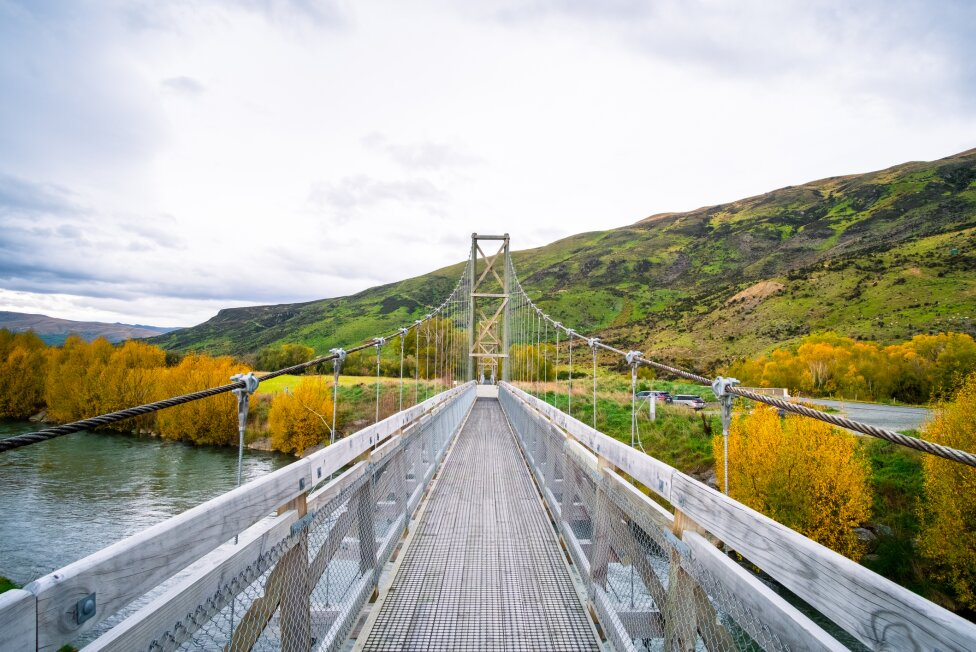
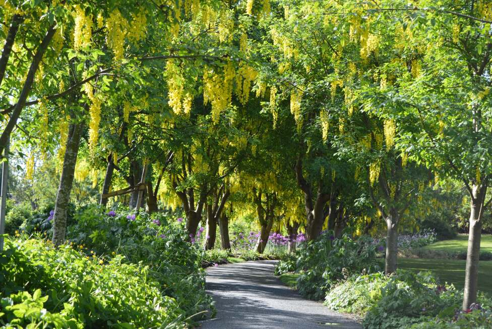
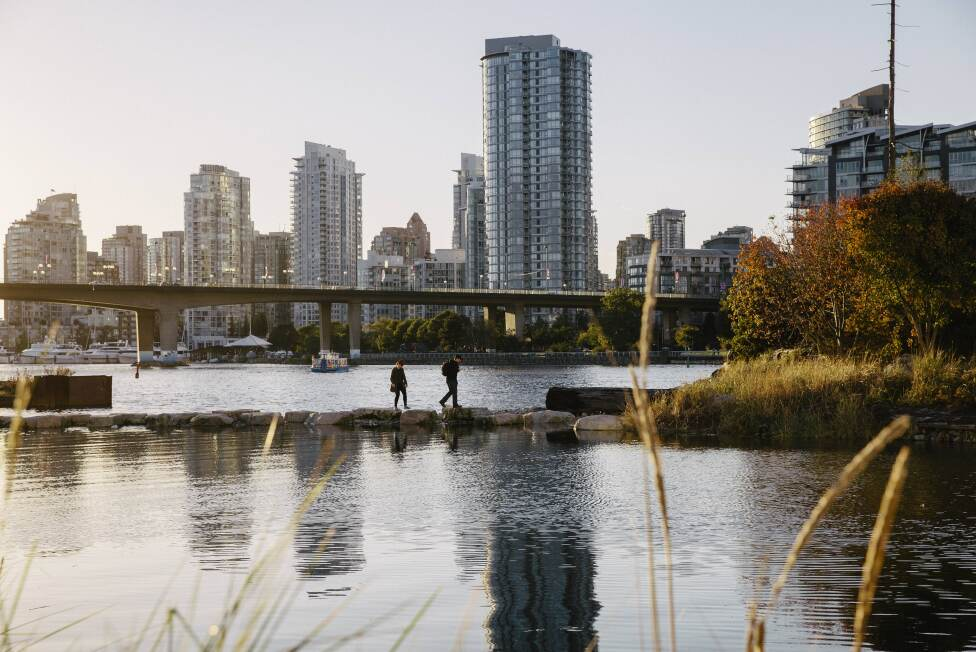
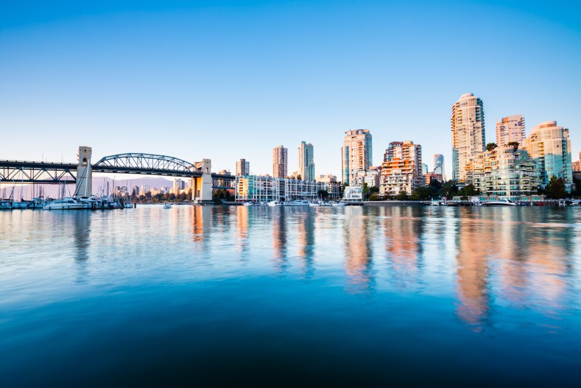
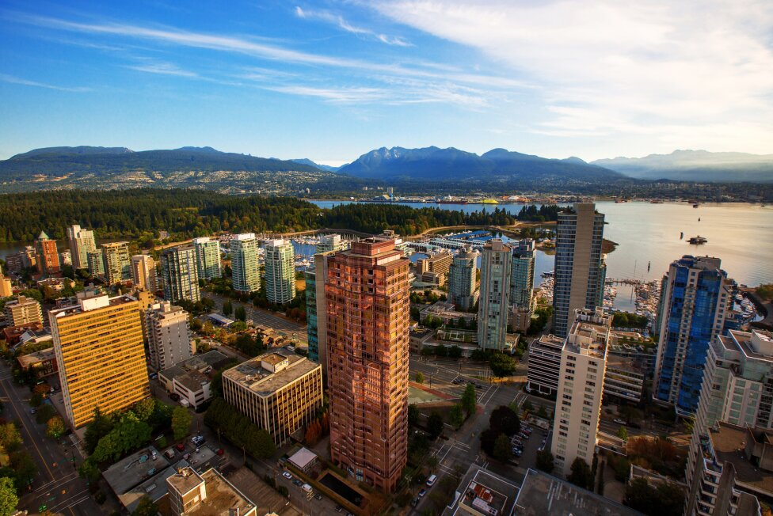
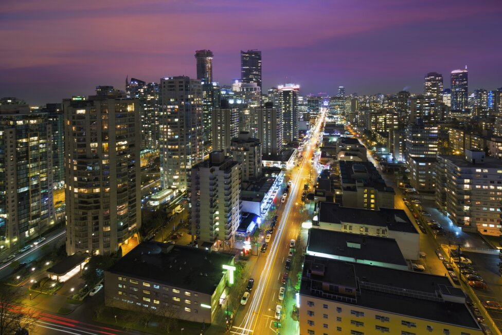
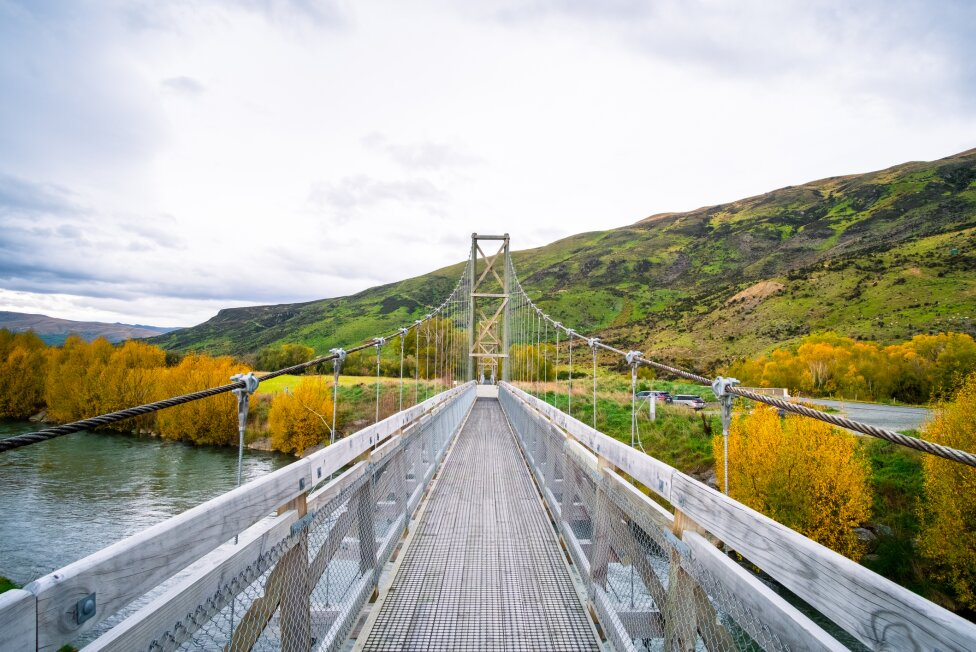
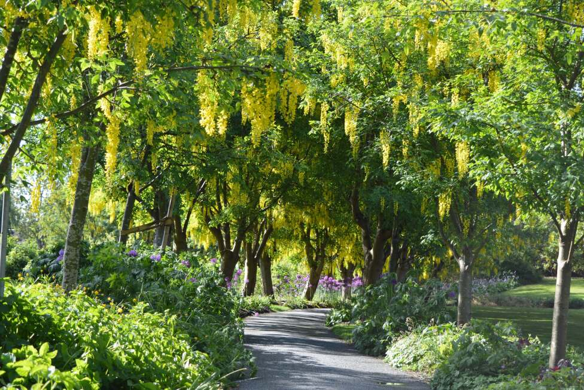
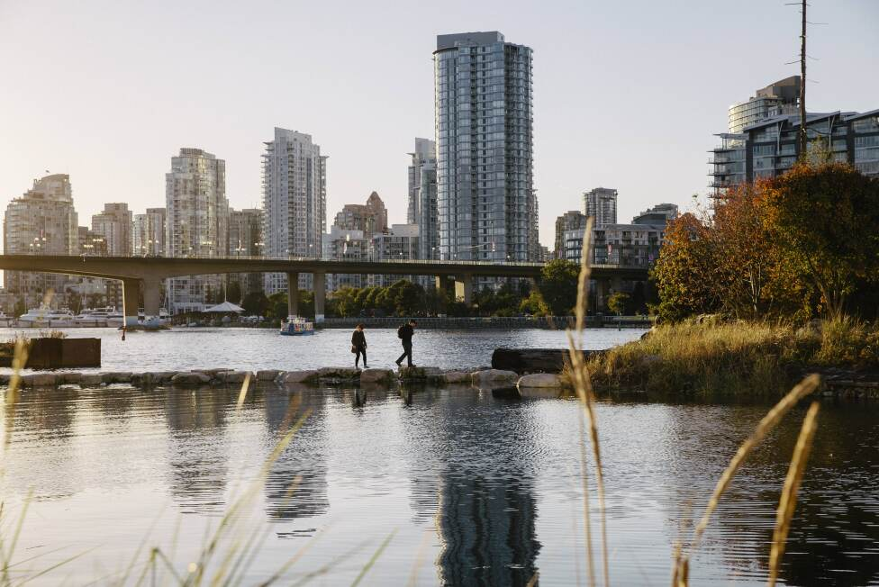
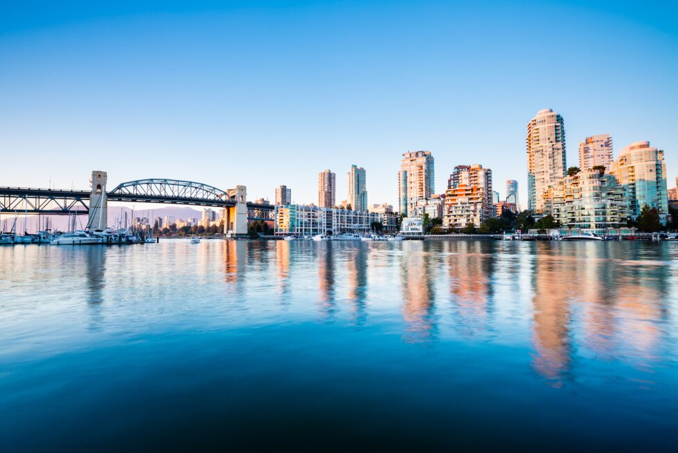
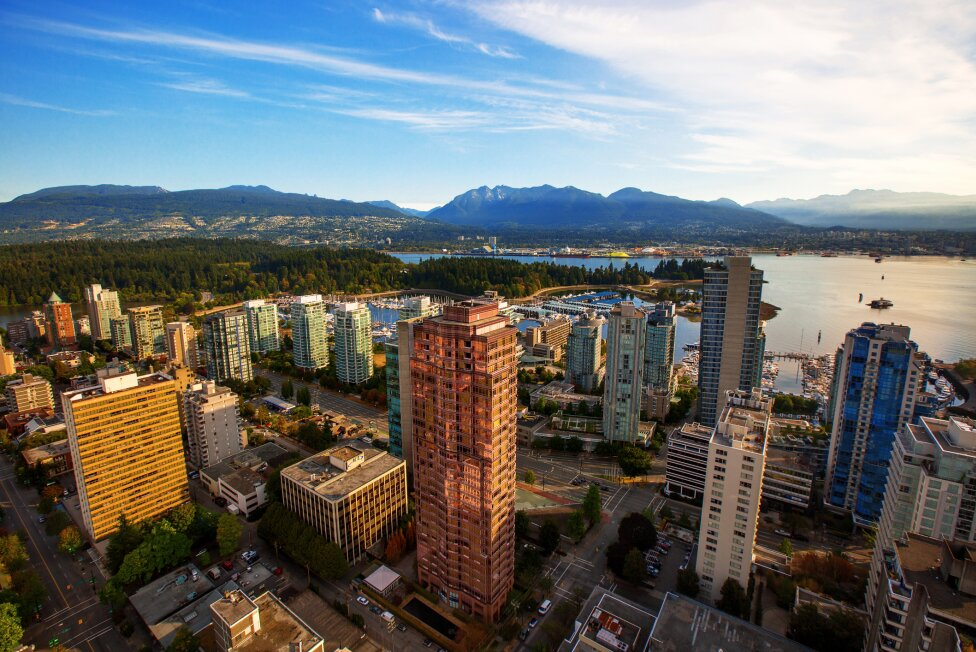
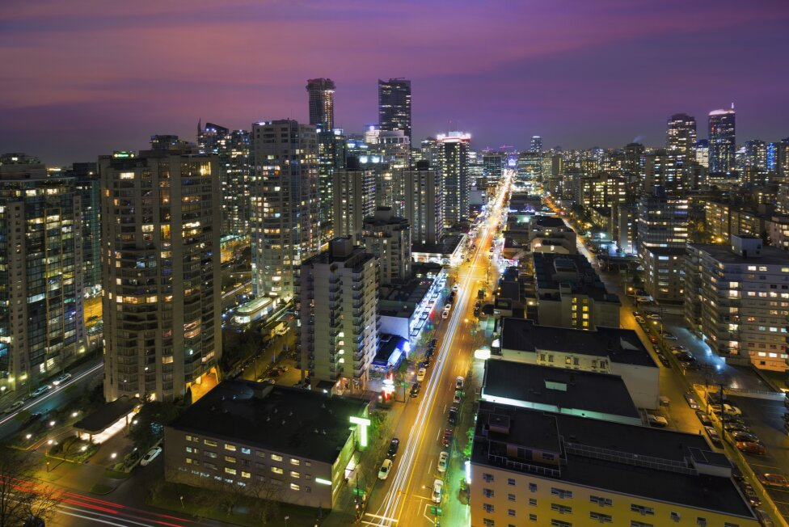
Explore Vancouver: A West Coast Gem
Natural WondersVancouver is renowned for its stunning natural beauty. Explore Stanley Park's lush greenery and scenic seawall, or escape to the North Shore Mountains for hiking, skiing, and breathtaking views of the city and ocean. Don't miss the opportunity to visit Capilano Suspension Bridge Park, where you can walk among towering trees and across a thrilling suspension bridge.
Cultural DiversityExperience Vancouver's vibrant cultural scene, influenced by its diverse population. Explore historic Gastown's cobblestone streets and trendy shops, or visit Chinatown for authentic cuisine and colorful markets. Be sure to check out the Vancouver Art Gallery, showcasing a diverse range of Canadian and international artists, and immerse yourself in the city's artistic flair.
Foodie ParadiseVancouver boasts a thriving food scene, offering everything from fresh seafood to international delicacies. Sample the city's best bites at Granville Island Public Market or indulge in farm-to-table dining in trendy Yaletown. Don't forget to explore the vibrant food truck culture, where you can find delicious and innovative street eats around every corner.
Urban AdventuresDiscover Vancouver's cosmopolitan charm with its modern architecture, bustling neighborhoods, and lively entertainment districts. Explore the trendy shops and eateries of Robson Street, or soak up the arts and culture in the vibrant Granville Island. Don't miss the chance to catch a show at the historic Orpheum Theatre or enjoy a leisurely stroll along the picturesque Vancouver Seawall.
Vancouver is a city of endless possibilities, where nature meets urban sophistication. Come and explore why Vancouver is a true West Coast gem.